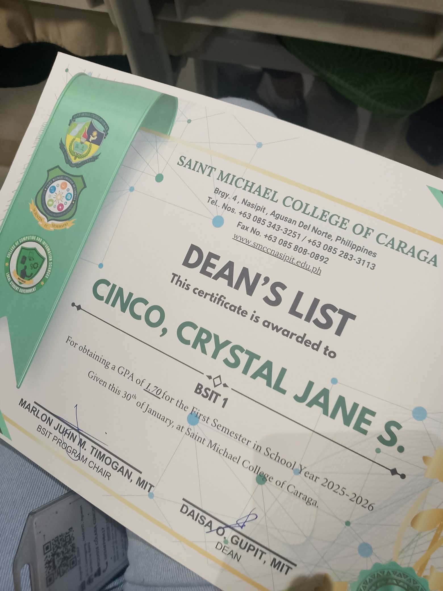

Hello! My name is Crystal Jane S. Cinco and I am currently studying Computer Science . I enjoy doing Cyclab Academy or what they called PicoCTF and exploring in different forms in Capture the Flag.
“It always seems impossible until it's done.”
― Nelson Maldena

AlGORITHM
Step-by-step problem-solving procedure.
VARIABLE
Storage for a value.
SYNTAX
Rules of a programming language.
SQL (Structured Query Language)
Language for managing databases.
| Category | Details |
|---|---|
| Favorite Language | Python and Java. |
| Favorite Tool | VS Code |
| Strenght | Problem Solving |
| Skills | Basic CTF (Capture The Flag), Editing. |
This text is styled using inline CSS.
This paragraph has a background color
This paragraph has a border.
This paragraph has increased font size.
Here is an example of an inline element placed inside a paragraph.